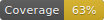

Testing Documentation Name - v1.1.0
Documentation Status: 
README.md
~
ts-lib-template
Simple TypeScript library template repository
Opinionated template for quickstart development of TypeScript/Vite library for SPA's or other Node projects.
The repository is themed as template, which means that anyone can create a new repository based on this one and start off with their own software building. As previously said, it is opinionated in terms of directory structure and used libraries to create a basic ready-to-publish NPM package.
How to use this template
The most straightforward way is to use this template directly from GitHub website view:

You may as well simply download this repository as a zip file and paste it into your existing repository.
Otherwise you can just get some inspiration by taking any parts of the code you found interesting :)
Tech Stack
- Vite
- Bundler tool. Held at version ^5, waiting for stabilizing new v6
- TypeScript
- Held at version ^5.4.0 due to TypeDoc peer dep
- ESLint (base, typescript, stylistic)
- Main package held at version ^8 due to waiting for stabilizing new v9
- TypeDoc
- Successor of JSDoc, who was inspired by JavaDoc/Doxygen HTML generated documentation
- Vitest
- tsx - TS Node runtime for scripts
Folder structure
- /lib - Core implementation of the TS/JS library
- /readme - Contains any more detailed markdowns or metadata used for markdowns (such as local images). Example: CHANGELOG.md
- /scripts - Contains platform-agnostic implementation of certain operations invoked by package.json and
tsxruntime - /src - Contains code that runs via
vite devinjected into bareindex.html. This is to dev-test real browser environment, so that the library code can be tried out (does not replace unit tests). - /tests - Unit tests utilized by
vitest. There can be any subdirectory structure, so you can model it just how you would like it the most :) - /types - Any environment modifications / TypeScript module augmentations for core
tsconfig.json. You can ignore the existence of this directory if you don't plan to tinker with TypeScript too deeply. - Generated directories
- /dist - The outputted production build
- /docs - The outputted static HTML page containing TypeDoc documentation
- /tmp - Temporary file utilized by
docscript to combine multiple readme files.
- Configuration files
.editorconfig- If you use VSCode and EditorConfig extension.eslintrc.cjs- ESLint configurationindex.html- Minimal html for running HMR vite dev, usessrc/main.tsto dev-test any currently developed code in/libtsconfig.json- One is found here in project root, defining core configuration for/liband/srcTS files. The other one is found in/scripts/tsconfig.json, which is meant for TS scripts onlytypedoc.config.cjs- TypeDoc configuration. Here you can edit name/links/entrypoints for the generated documentationvite.config.ts- Bundler configuration for building the library production packagevitest.config.ts- Unit tests configuration for environment, test source files detection, ...
Prepared scripts
This template contains some premade scripts, which is meant as a suggestion to ease up all development work on simple JS library.
yarn: Installs dependenciesyarn clean: In case of things breaking, remove all generated directories- You can update this procedure in
scripts/clean.ts
- You can update this procedure in
yarn dev: Runs minimalindex.htmlpage for temporary dev-testsyarn lint: Runs ESLint on/lib,/scriptsand/testssourcesyarn test: Runs Vitest on/testsspec files with unit test implementationsyarn build: Runs production build into/distdirectoryyarn doc: GeneratesTypeDocstatic HTML documentation into/docs- You can update the specifics of this procedure in
scripts/doc.ts
- You can update the specifics of this procedure in
yarn deploy: Manually performsnpm publishwith some preparation steps- You can change the procedure's behavior in
scripts/deploy.ts, although that should not be necessary. This script eventuall callsnpm publish, you can learn more about it on https://docs.npmjs.com/cli/v9/commands/npm-publish
- You can change the procedure's behavior in
What to edit first
- Remove all dummy code from
/lib - If you don't wish to use any code within
/src, you can delete it along withindex.htmlin root of the project tests/*- Delete tests sources that are tied to dummy/libimplementationREADME.md- This readmepackage.json- Editname,version, and many more fields according to your needstypedoc.config.cjs- Edit package name and change/delete navigation linksreadme/SCAFFOLDING.md- You can delete this. If you proceed to do so, editsripts/doc.ts, so that the script will not attempt to concatenate that markdown file into generated HTML documentation.readme/CHANGELOG.md- Clear contents or delete (if you delete, don't forget with editing step in the script)LICENSE- Edit or delete
License
This repository is released under MIT license, which means that you can reuse any part of code here for your convenience.
Copyright (C) 2025-present, Andrej Hučko
If you like this template, don't hesitate to give this repository a star! 😊
</details>
<br>
readme/CHANGELOG.md
~
Changelog
...
1.1.0: Updatedpackage.jsondevDependencies versions1.0.0: Updated markdowns, final touches, marked as ready for public0.10.0: Rewritten scripts to TypeScript, utilizingtsxnode runtime0.9.1: Cosmetic changes0.9.0: Slightly improved typedoc index generation from markdowns0.8.0: Added/srcdirectory for any temporary devtesting sources withindex.htmlto runvite dev0.7.0: Refined scripts0.6.1: Created a way to squash multiple markdowns into the index page of TypeDoc0.6.0: Boosted TypeDoc capabilities - added many plugins0.5.1: Try combination JS implementation withd.tsdeclaration file0.5.0: Milestone checkmark - working base TypeDoc0.4.0: Milestone checkmark - working base Vitest0.3.0: Milestone checkmark - working ESLint0.2.10: Updated Node classes0.2.9: Migrated to up-to-date variant of ESLint including Stylistic rules0.2.5: Added draft variant of ESLint, contains deprecated rules0.2.0: Milestone checkmark - working extended examples0.1.1: Adding variants of dummy implementations0.1.0: Milestone checkmark - working deploy0.0.3: Update build config0.0.2: Add deploy scripts0.0.1: Core init0.0.0: Initialized Repository
readme/SCAFFOLDING.md
~
Scaffolding
Documentation of the steps of what was used for scaffolding this template.
yarn create viteProject name: ts-lib-templateSelect a framework: VanillaSelect a variant: TypeScript
Modify folders
- Add
/lib - Add
/types - Remove
/src&public - Move
src/vite-env.d.tsto/types
- Add
Create
vite.config.tsAdd dependencies:
- dev
@types/node - dev
vite-plugin-dts
- dev
Add
.editorconfigfileAdd ESLint
Variant - ESLint v9 (DOES NOT WORK YET)
yarn create @eslint/config- "How would you like to use ESLint?" → 'to check syntax, find problems, enforce code style' →
style - "What type of modules does your project use?" → 'JS modules (import/export)' →
esm - "Which framework does your project use?" → 'None of these' →
none - "Does your project use TypeScript?" → 'Yes' →
typescript - "Where does your code run?" → 'Browser && Node' →
browser, node - "Which style guide do you want to follow?" → "Standard" →
standardThe config that you've selected requires the following dependencies:
eslint, globals, eslint-config-standard-with-typescript, @typescript-eslint/eslint-plugin@^6.4.0, eslint@^8.0.1, eslint-plugin-import@^2.25.2, eslint-plugin-n@^15.0.0 || ^16.0.0 , eslint-plugin-promise@^6.0.0, typescript@*, typescript-eslint, @eslint/eslintrc, @eslint/js
- "How would you like to use ESLint?" → 'to check syntax, find problems, enforce code style' →
- Add
vite-plugin-eslint
Variant - ESLint v8
- TypeScript ESLint Legacy Setup
- Add dependencies
yarn add -D eslint@8.57.0(Last v8 version)yarn add -D @types-eslint- → partially works!
yarn add -D @typescript-eslint/parseryarn add -D @typescript-eslint/eslint-plugin- Regarding vite plugins:
- Do not use any
yarn add -D vite-plugin-eslint(This is unmaintained since 2022 but it does not matter. In this Pure-Library project, this is enough for now, maybe even unnecessary if we enforce linting as a separate commandyarn add -D @nabla/vite-plugin-eslint(official vite-plugin-eslint is unmaintained since 2022)
Addition: Stylistic ESLint migration
- https://eslint.style/guide/migration
yarn add -D @stylistic/eslint-plugin
Helping reads:
Add Vitest
yarn add -D vitest- https://vitest.dev/guide/
Add TypeDoc
yarn add -D typedoc- https://typedoc.org/
- https://typedoc.org/guides/installation/#typedoc.json